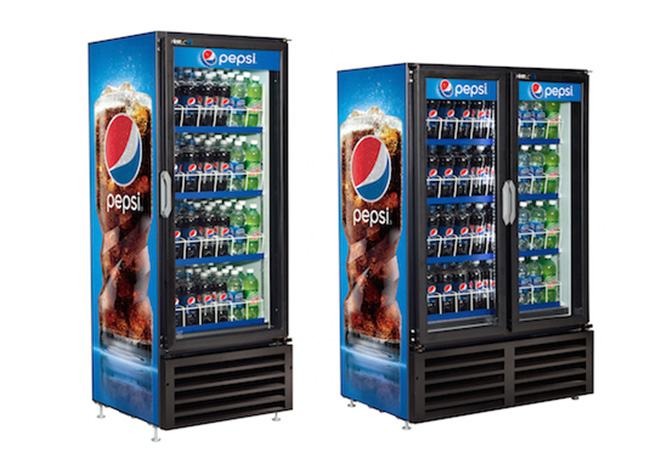

Fountain Services
Our wide selection of quality beverages and snacks fill the vending machines and needs of businesses around the Northwest.
- Phone: (360) 857-5077
- Email: Jeremy_Matthiesen@corwinbevco.com
Fair and flexible contracts
Our uniquely flexible contract, tailored to meet the needs of independent local grocery stores, features discounted pricing on take home packages, CDA accruals to assist in driving down retails around key holidays, and competitive pricing on standard, everyday packages.
A variety of popular products
We offer a wide array of beverage and snack options including:
- Soft drinks (canned, bottled, and fountain)
- Energy drinks
- Coffee & Tea
- Waters
- Sports & Protein Drinks
- Juices
- Snacks
Fresh and innovative product selection
We constantly review trends and stay on top of consumer needs and local demographics to bring you innovative new products and ensure our set does not include items that are just place holders. Promotions are run each time a new item is launched.
Convenient delivery
We deliver at least once a week based on volume, a standard in the grocery market. Because we’re local, we’re able to promptly take care of missed items or special deliveries and ensure sales are not lost – a capability our competition lacks.
Service you can count on
We deliver the same day each week, based on volume. Because we’re local, we’re able to promptly take care of missed items or special deliveries and ensure sales are not lost.
If a machine needs repair, contact our Corwin office and a Service Technician will be at your site, same day. Call the office to be directed to our on-call service for after-hours repairs. Our on-call weekend service will respond to service requests within 24 hours.
Accessible managers
Our managers are readily available to assist you with any needs or concerns. Call the Corwin office to be connected.
Easy payment options and rebates
We make it simple to pay your account via charge, cash or check. Purchase rebates are offered based off of volume and package diversity.
Machines to match your needs
Your Corwin Sales Representative will recommend which fountain drink machine will best suit your needs based on location, volume of beverage, package mix, ease of use and type of establishment.
Equipment is loaned free of charge with product purchase.
A perfect mix
We provide both Post-Mix and Pre-Mix soft drink options:
- Post-Mix (Bag in a box): Concentrated syrup in 5 gal box. Syrup is mixed with water at a ratio of 5 parts water to 1 part syrup then carbonated by CO2. (Makes 30 gallons of finished product, 3,840 total ounces.)
- Pre-Mix (Tank) Pre-made soda in 5 gal tank. Already mixed with water, Pre-Mix just needs carbonation with CO2 to make a finished product. (Makes 5 gallons of finished product, or 640 total ounces.) Use Pre-Mix if you have code date issues running Bag in a Box.
Bottles to go
These impulse consumer buys can add revenue to your business. We have over 800 additional bottled beverage options not available on fountain, and will provide a cooler at no charge when you purchase Corwin “bottle to go” product.
